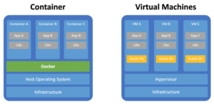

Re-pensando a virtualização através de Open-Source Linux Containers
Publicado em 2016-09-29 14:15:00
O Docker, o projecto de código aberto que cria recipientes de aplicações virtualizadas, tornou-se mais maduro, com a versão 0.8, que oferece suporte Mac OS X e melhorias de desempenho.
O Docker é uma abordagem de virtualização baseada em “containers” e open-source, que é muito diferente do modelo hypervisor no qual se baseiam as principais soluções de virtualização empresariais, tais como a VMware , KVM e Xen. E este deu mais um grande passo em direção à maturidade com o lançamento bem recente da versão 0.8 Docker . Também disponível para Mac OS, as suas principais melhorias de desempenho e muito mais “features” estão agora disponíveis na plataforma que poderia se tornar uma parte importante do ecossistema de virtualização, e num futuro não muito distante.
Ao contrário dos hipervisores de virtualização que são hoje o eco-sistema da maioria dos servidores virtuais, o Docker Linux Container não virtualiza um sistema operativo completo. Em vez disso, ele fornece recipientes de aplicação virtualizados que rodam em cima de um sistema operativo em "bare-metal". Ao virtualizar no nível das aplicações, o Docker pode oferecer maior portabilidade, eficiência e segurança.
O conceito não é novo. O Docker é essencialmente uma extensão de Linux Containers , uma infra-estrutura de virtualização baseada em tecnologia de “userspace” que está disponível como parte do código fonte do Linux há anos. Mas o Docker, um projecto open source que viu o seu primeiro lançamento em março de 2013, visa a modernização do modelo de virtualização assente em “containers”, simplificando a sua implementação e adequando-o para atender às demandas de computação em nuvem e soluções de PaaS (Plataform-as-a-Service).
Com o lançamento do Docker 0,8 em 4 de fevereiro, a plataforma oferece agora suporte oficial para Mac OS X. E também beneficia de uma série de atualizações que melhoram o desempenho, incluindo a redução na memória que o sistema utiliza, a infra-estrutura de suporte e uma diminuição do tempo necessário para construir aplicativos e iniciar o “daemon” do Docker.
Docker 0.8 também introduz um novo modelo de lançamento de novas versões. De agora em diante, o projecto vai lançar uma nova versão a cada mês, com base atualizações de versão em uma linha do tempo, em vez de recursos. O Docker também vai adoptar convenções de numeração mais simples para os lançamentos.
Ambas as mudanças, juntamente com tudo o mais na versão mais recente Docker, apontam para a crescente maturidade da Docker. O suporte ao sistema operativo Mac OS X e uma cadência de liberação padronizado não significa que o Docker está pronto para o horário nobre, e o projeto ainda está longe de ser a fase de adoção mainstream. Mas chegou muito longe nos menos de 12 meses desde a sua primeira versão, e, o quando ele está pronto para a produção, que poderá vir a afetar drasticamente a forma como as organizações podem vir a re-pensar e implementar a virtualização. (..).
10 de fevereiro de 2014
O link do artigo original em Docker Open-Source Container.
O Docker, e a tecnologia de Linux Containers, irão certamente obrigar a repensar a virtualização no data-center, sobretudo porque o Docker implementa mais portabilidade, rapidez de execução e na implementação de infra-estruturas de suporte a aplicações, que as tecnologias de virtualização actuais. E estes atributos são cada vez mais importantes, e até estratégicos nas infra-estruturas empresariais, e reforçam as estratégias de PaaS (Plataform-as-a-Service), que prometem revolucionar a forma e rapidez com que as aplicações são diponibilizadas para os utilizadores.
Francisco Gonçalves "in" 11Feb2014
Em ambientes de desenvolvimento de software recentes, implementei Linux Containers, usando a tecnologia Docker, para suportar uma plataforma de desenvolvimento Java e javascript (client-side), nomeadamente o Wavemaker, que é suportado pelo Web server TomCat. Este Linux Container inclui a base de dados MySql e o PhpMyAdmin, uma ferramenta imprescindível de administração de BD MySql.
Para demonstar os atributos de portabilidade, rapidez de execução e eficiência na implementação de aplicações e serviços sobre um qualquer "bare-metal" encontrarão abaixo alguns scripts que irão criar de forma automatizada um servidor de desenvolvimento WaveMaker completo e pronto a explorar, como atrás descrito.
Passando à parte mais prática !
Vamos construir um contentor com o Docker, que armazenará um servidor web e aplicação RAD Development Studio da Wavemaker, com suporte de base de dados MySql e phpmyadmin. E pronto a executar! Tudo num único contentor portátil e criado automáticamente através da execução de um script ou Dockerfile. Vamos a isso !!?
Partindo do pressuposto de que dispõe de um host, fisico ou virtual em Linux / Unix, o primeiro passo será a instalação do executivo Docker.io.
Aqui vamos assumir que dispomos de um host virtual de base Debian ou Ubuntu, para facilitar o exemplo.
1. Instalação do Docker (Ubuntu 13.04) - Para outras versões de Ubuntu consultar em Docker!
# install the backported kernel
sudo apt-get update
sudo apt-get install linux-image-generic-lts-raring linux-headers-generic-lts-raring
# reboot
sudo reboot
sudo apt-get update
sudo apt-get install linux-image-generic-lts-raring linux-headers-generic-lts-raring
# reboot
sudo reboot
Preparar repositório do docker e instalar :
# sudo sh -c "echo deb http://get.docker.io/ubuntu docker main
> /etc/apt/sources.list.d/docker.list"
# sudo apt-get update
# sudo apt-get install lxc-docker
> /etc/apt/sources.list.d/docker.list"
# sudo apt-get update
# sudo apt-get install lxc-docker
(instalação completa - fácil não!? )
2. Criação de um container com o WaveMaker Studio e respectiva configuração
# mkdir WaveCloud
# cd WaveCloud
# mkdir resources
# vi Dockerfile
|
# Written by Francisco Gonçalves @ Softelabs.com, Portugal
# in 09Feb2014
#
FROM ubuntu:precise
MAINTAINER Francisco Goncalves "fgoncalves@softelabs.com"
RUN echo "deb http://archive.ubuntu.com/ubuntu precise main universe" >> /etc/apt/sources.list
RUN apt-get -y update
RUN locale-gen pt_PT pt_PT.UTF-8
ENV LANG pt_PT.UTF-8
ENV LC_ALL pt_PT.UTF-8
RUN dpkg-reconfigure locales
RUN echo "mysql-server mysql-server/root_password password donuts" | debconf-set-selections
RUN echo "mysql-server mysql-server/root_password_again password donuts" | debconf-set-selections
RUN echo "mysql-server mysql-server/root_password seen true" | debconf-set-selections
RUN echo "mysql-server mysql-server/root_password_again seen true" | debconf-set-selections
RUN apt-get install -y wget vim openssh-server openssh-client openjdk-6-jdk
# Install Apache
RUN apt-get install -y apache2
# Install php
RUN apt-get install -y php5 libapache2-mod-php5 php5-mcrypt php5-mysql
RUN printf y\n\n\n1\n | apt-get install -y phpmyadmin
RUN sed -i "s#// $cfg['Servers'][$i]['AllowNoPassword'] = TRUE;#$cfg['Servers'][$i]['AllowNoPassword'] = TRUE;#g" /etc/phpmyadmin/config.inc.php
RUN dpkg -i wavemaker_6.7.0M3_amd64.deb
#
ADD resources/cfgmysql.sh /tmp/cfgmysql.sh
RUN chmod +x /tmp/cfgmysql.sh
RUN /tmp/cfgmysql.sh
#
ADD resources/start.sh /tmp/start.sh
RUN chmod +x /tmp/start.sh
RUN /tmp/start.sh
#
ADD resources/passuser.txt /opt/passuser.txt
#RUN useradd fgoncalves
#RUN passwd fgoncalves < /opt/passuser.txt
RUN useradd fgoncalves
RUN passwd root < /opt/passuser.txt
RUN passwd fgoncalves < /opt/passuser.txt
ADD resources/startup.sh /opt/startup.sh
RUN chmod +x /opt/startup.sh
#
#VOLUME /var/lib/mysql
#VOLUME /root/Wavemaker/projects
EXPOSE 8094
EXPOSE 8080
EXPOSE 80
EXPOSE 22
#
CMD ["/bin/bash", "/opt/startup.sh"]
|
Criar os seguintes scripts invocados pelo Dockerfile acima :
# cd resources
#
# vi start.sh
|
#
#!/bin/bash
#
# Prepare ssh server
apt-get clean
#
mkdir -p /var/run/sshd ; chmod -rx /var/run/sshd
#ssh-keygen -t rsa -f /etc/ssh/ssh_host_rsa_key
# Bad security, add a user and sudo instead!
#sed -ri 's/#PermitRootLogin yes/PermitRootLogin yes/g' /etc/ssh/sshd_config
#sed -ri 's/UsePAM yes/#UsePAM yes/g' /etc/ssh/sshd_config
#sed -ri 's/#UsePAM no/UsePAM no/g' /etc/ssh/sshd_config
#service ssh restart
#
# Set apoache2 with SSL KEY
#
#
#chown -R www-data:www-data /var/www/owncloud
#a2ensite default
#a2enmod rewrite ssl
#2enmod ssl
#
#ulimit -n 826944 826914
#
HOSTLINE=$(echo $(ip -f inet addr show eth0 | grep 'inet' | awk '{ print $2 }' | cut -d/ -f1) $(hostname) $(hostname -s))
|
# vi startup.sh
#
|
#!/bin/bash
# Written by Francisco Gonçalves @ Softelabs.com, Portugal
# in 09Feb2014
#
sed -i "s#// $cfg['Servers'][$i]['AllowNoPassword'] = TRUE;#$cfg['Servers'][$i]['AllowNoPassword'] = TRUE;#g" /etc/phpmyadmin/config.inc.php
/usr/bin/mysqld_safe &
echo "MySql is up and running "
#
# Created Dir for ssh process-id to start with
#mkdir /var/run/sshd
#
/usr/sbin/sshd &
#
echo "ssh started ok.."
#
#ulimit -n 826944 826914
#
/opt/wavemaker-6.7.0M3/bin/wavemaker.sh start &
#
echo "WaveMaker Studio Container is up and running "
#
/usr/sbin/apache2ctl -D FOREGROUND
#
echo "Apache2 & Phpp Admin Up and running "
echo " "
echo "And that's all done... "
#
|
# vi cfgmysql.sh
|
#
#!/bin/bash
# Written by Francisco Gonçalves @ Softelabs.com, Portugal
# in 09Feb2014
#
sed -i -e"s/^bind-addresss*=s*127.0.0.1/bind-address = 0.0.0.0/" /etc/mysql/my.cnf
sed -i 's/bind-address = 0.0.0.0/#bind-address = 0.0.0.0/g' /etc/mysql/my.cnf
#
sed -i 's/.*skip-external-locking*/&nskip-name-resolve/' /etc/mysql/my.cnf
#
sed -i "s#// $cfg['Servers'][$i]['AllowNoPassword'] = TRUE;#$cfg['Servers'][$i]['AllowNoPassword'] = TRUE;#g" /etc/phpmyadmin/config.inc.php
#
/usr/bin/mysqld_safe &
#
sleep 5s
#
echo "CREATE USER 'admin'@'localhost' IDENTIFIED BY 'donuts';" | mysql -uroot -pdonuts
sleep 5s
echo "GRANT ALL ON *.* TO 'admin'@'localhost' WITH GRANT OPTION;" | mysql -uroot -pdonuts
sleep 5s
echo "GRANT ALL ON *.* TO 'admin'@'%' IDENTIFIED BY 'donuts' WITH GRANT OPTION;" | mysql -uroot -pdonuts
sleep 5s
echo "CREATE USER 'wavedev'@'localhost' IDENTIFIED BY 'donuts'" | mysql -uroot -pdonuts
sleep 5s
echo "SET PASSWORD FOR 'root'@'localhost' = PASSWORD('donuts');" | mysql -uroot -pdonuts
sleep 5s
#
echo "done database setup for wavemaker development environment.."
#
|
# vi passuser.txt
( modificar a password da root para este container )
|
password
password |
Criação do Container…
# cd WaveCloud
# docker build -t Demo/WaveCloudv67 .
Após terminar a execução deste script contido no Dockerfile que acima editou deverá ter sido criado um container.
Para visualizar a imagem do container agora criado use o comando:
# docker images
Para “correr” o container usar o comando, criando um script conforme se segue :
|
dockid=$(docker run -d -p 8094:8094 -p 8080:8080 -p 800:80 3406:3306 -p 100:22 Demo/WaveCloudv67 /opt/startup.sh)
#
echo "Instance id = $dockid "
sleep 30
#
echo "docker logs $dockid" > logcheck.sh
chmod 777 logcheck.sh
docker logs $dockid
#
docker ps |
Pode ver todos os containers em execução através do comando:
# docker ps
Pode remover parar ou iniciar um container:
# docker start id-container
#docker stop id_container
Ou remover um container:
# docker rmi id-container
Após instalado e “running” o container do Wavemaker Studio, bastará que no seu Browser use o url no formato que se segue:
NOTA Importante : Tal como a nova versão do Docker 0.8, já suporta o MAC O/S, também o WaveMaker suporta este sistema operativo.
Para invocar o WaveMaker Studio:
Para invocar o phpmyadmin :
And that's all folks .....
By Francisco Gonçalves @ Softelabs.com in 11Feb2014
IT Architect & Open-Source Solutions Advisor